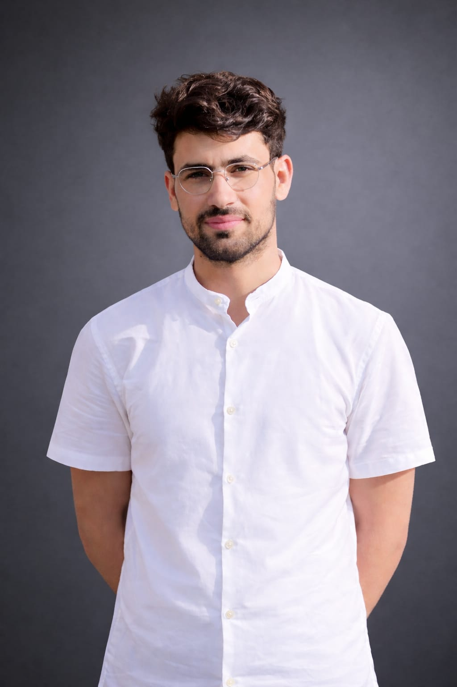

Email: cseaimal@gmail.com | Phone: +92 3360099487
GitHub: cseaimal | LinkedIn: cseaimal
I am a passionate Flutter developer and Computer Systems Engineering student at UET Peshawar. I enjoy building mobile applications, working on Raspberry Pi projects, and designing modern UI/UX. My goal is to become a professional software engineer and contribute to innovative tech solutions.
BS Computer Systems Engineering – UET Peshawar (2023–2027)
FSc Pre-Engineering – Islamia College Peshawar (A+)
Flutter Developer – SDRC (2025)
Built cross-platform Flutter apps with Firebase integration.
Flutter Developer – NeuroApp (Present)
Working on UI and performance optimization of mobile apps.
© 2026 Aimal Khan | CV Website